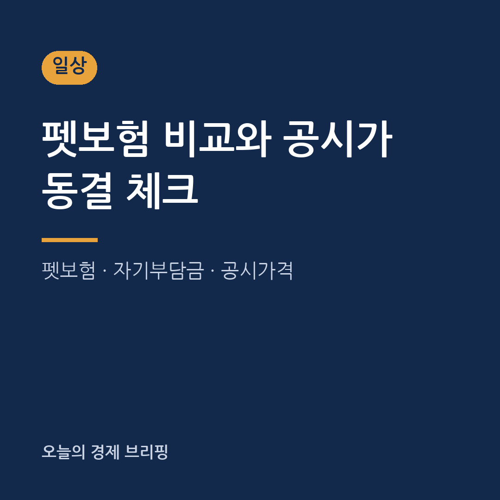
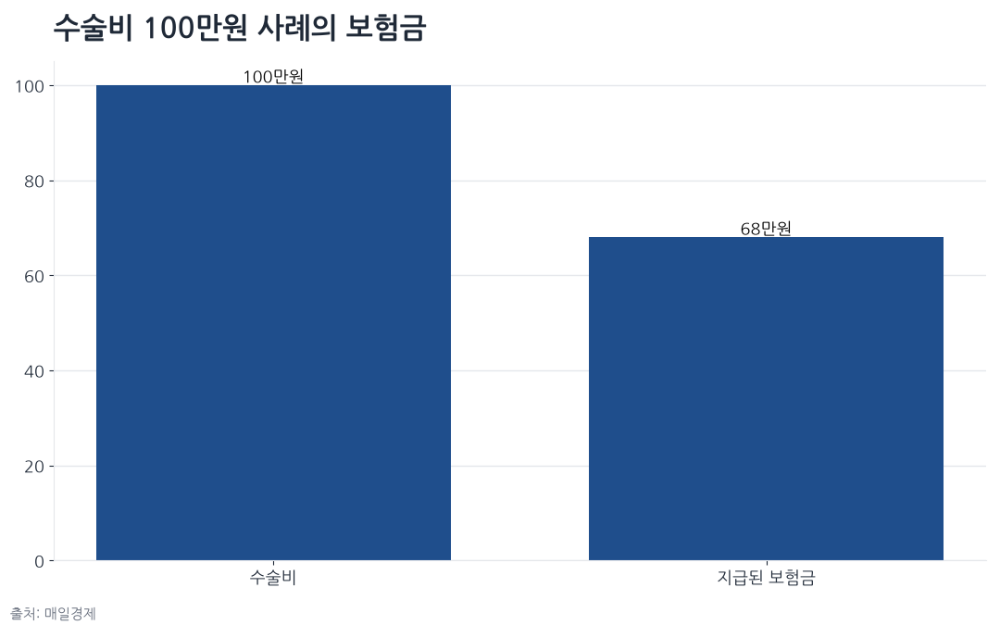
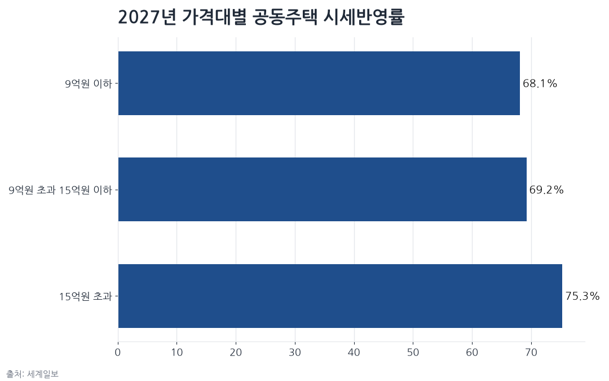

2026-11-21-1823-naver 발행 키트 · 이 페이지는 검색에 노출되지 않습니다.
제목
카테고리
일상태그
본문 (그림·표 포함)
휴대폰 블로그 앱에서는 그림이 같이 붙지 않을 수 있어요. 그때는 [글자만 복사] 후 아래 이미지를 저장해 [그래프1]·[표1] 자리에 첨부하세요.

연말이 가까워지면 한 해 동안 어디로 돈이 새어 나갔는지 슬쩍 돌아보게 되잖아요. 반려동물과 함께 사는 분이라면 병원비가, 내 집을 가진 분이라면 세금이 제일 마음에 걸릴 거예요.
오늘은 최근 나온 소식 두 가지를 생활 관점으로 묶어 봤어요. 하나는 펫보험이고, 하나는 내년 공시가격 이야기예요.
▶ 펫보험 가입이 빠르게 늘고 있대요
매일경제 보도를 보면 반려동물 한 마리가 병원에서 쓰는 평균 치료비가 146만원으로 소개됐어요. 한 번 아프면 목돈이 훅 나가는 구조인 거죠.
그래서인지 펫보험 계약이 1년 만에 55% 늘었다고 해요. 그만큼 많은 분들이 병원비 대비책을 찾고 있다는 얘기예요.
▶ 수술비 100만원이 나오면 얼마를 돌려받을까요?
기사에 나온 사례를 보면 수술비 100만원 중 보험금으로 지급된 돈은 68만원이었어요. 차액 32만원은 가입한 사람이 직접 낸 셈이에요.
보험에 들었다고 병원비가 전부 사라지는 건 아니라는 뜻이에요. 보장비율과 자기부담금에 따라 이런 차이가 생기거든요.

▶ 가입 전에 이 네 가지는 꼭 비교해요
기사에서도 보장비율과 자기부담금을 꼭 비교해 보라고 짚었어요. 아래 표처럼 상품 설명서를 열어 놓고 하나씩 체크해 보시면 편해요.
펫보험 가입 전 확인 네 가지
| 확인 항목 | 무엇을 보나요 | 어디서 보나요 |
|---|---|---|
| 보장비율 | 치료비 중 보험사가 부담하는 비율 | 상품 설명서 |
| 자기부담금 | 청구할 때 내가 먼저 부담하는 금액 | 약관 |
| 보장 범위 | 통원·입원·수술 중 어디까지 포함되는지 | 상품 안내문 |
| 우리 아이 조건 | 나이·병력에 따른 가입 조건 | 보험사 상담 |
출처: 매일경제
보험료가 싸다는 이유만으로 고르면 막상 청구할 때 아쉬울 수 있어요. 우리 아이가 자주 아픈 부위나 걱정되는 질환이 보장 범위 안에 들어가는지도 같이 봐 두세요.
▶ 집을 가진 분이라면 내년 공시가 소식도 확인해요
최근 정부가 2027년 부동산 가격공시 추진방안을 내놨는데, 내년 공동주택 공시가격 현실화율이 69%로 동결된대요. 현실화율(공시가격을 시세에 얼마나 맞출지 정하는 비율)이 안 오르면 그만큼 세금이 갑자기 뛰는 걸 막을 수 있거든요.
가격대별 시세반영률도 올해와 같아요. 9억원 이하는 68.1%, 9억원 초과 15억원 이하는 69.2%, 15억원 초과는 75.3%예요.

▶ 그래도 안심하긴 일러요
우리은행 함영진 부동산리서치랩장은 현실화율 동결로 보유세 충격이 어느 정도 줄어들 거라고 봤어요. 다만 집값이 오른 지역은 공시가격 자체가 오를 수 있어서 부담이 남는다고 했어요.
우리 동네 집값이 최근에 많이 올랐다면, 내년 공시가격이 공개될 때 내 집 가격이 어떻게 매겨졌는지 한 번 열어 보세요.
▶ 한 줄 정리
반려동물 병원비는 보험 가입 전 보장비율·자기부담금부터, 내 집 세금은 공시가격 공개 때 확인부터 챙기면 돼요.
여러분은 펫보험 들어 두셨나요? 어떤 기준으로 고르셨는지 댓글로 알려 주세요.
이미지 (개별 복사·저장)
출처 (본문 맨 아래에 붙여넣기 권장)
- 매일경제, “널 가족이라 생각하지만, 돈은 좀 아껴야겠어”…댕댕이 펫보험 ‘주목’, https://www.mk.co.kr/news/economy/12215285 - 세계일보, “공시가 현실화율 동결, 보유세 충격 완화...집값 오른 지역은 부담 여전”, https://www.segye.com/newsView/20261120515569